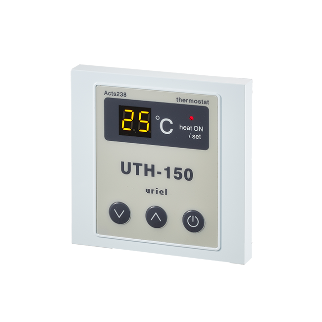

Термостаты / UTH-150 (встраиваемый) Терморегулятор

Термостат скрытого монтажа для теплых полов. В комплекте с датчиком температуры пола. Выполнен из ударопрочного пластика. Прибор прост в управлении, оснащен легко читаемым дисплеем. Настройка температуры от 0 до 60 °С. Гарантийный срок 3 года, ожидаемый срок эксплуатации 10 лет.
Прибор может работать в двух режимах:
- SEN-SENSOR – управление обогревом на основании показаний датчика температуры,
- TIN-TIMER – режим таймера, без подключения датчика температуры.
Производитель: Uriel Electronics (Южная Корея)
Технические характеристики
| Тип монтажа | встраиваемый |
| Напряжение питания | 220 В |
| Максимальный ток нагрузки | 10 А |
| Максимальная нагрузке | 2,3 кВт |
| Диапазон регулировки температур | 0…+60 С° |
| Используемые датчики | NTC, в комплекте |
| Температура эксплуатации | от 0 до +40 °С |
| Размеры (ШхВхГ) | 80 х 80 х 39 мм |
| Вес | 270 г |